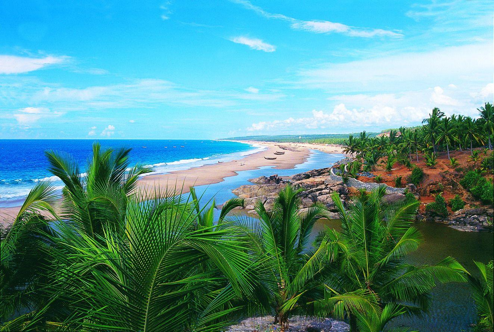

.jpg)
Kerala, located in the southwestern part of India, is known as "God's Own Country" for its breathtaking natural beauty, serene backwaters, lush greenery, and rich cultural heritage. Here are some highlights about Kerala:
1. Backwaters: Kerala is famous for its backwaters, a unique network of lakes, canals, and rivers that meander through the state. Alleppey (Alappuzha) and Kumarakom are popular destinations where visitors can experience houseboat cruises amidst picturesque landscapes.
2. Ayurveda: Kerala is renowned for Ayurveda, an ancient system of medicine and wellness. Visitors can rejuvenate and heal through Ayurvedic treatments such as massages, herbal therapies, and yoga, offered at numerous resorts and wellness centers across the state.
3. Beaches: Kerala boasts of beautiful beaches along its 600-kilometer coastline. Kovalam, Varkala, and Marari Beach are some of the most popular beaches known for their golden sands, clear waters, and tranquil surroundings.
4. Wildlife: The state is home to several wildlife sanctuaries and national parks, including Periyar Tiger Reserve, Wayanad Wildlife Sanctuary, and Eravikulam National Park (famous for the endangered Nilgiri Tahr). These areas offer opportunities for wildlife safaris and bird watching.
5. Cultural Diversity: Kerala has a rich cultural heritage with influences from Hindu, Muslim, and Christian communities. The state celebrates numerous festivals such as Onam (the harvest festival), Thrissur Pooram, and Theyyam performances, showcasing vibrant traditions, music, and dance forms like Kathakali and Mohiniyattam.
6. Cuisine: Kerala cuisine is characterized by its use of coconut, rice, seafood, and spices. Must-try dishes include appam with stew, Kerala fish curry, puttu, and banana chips. The state's culinary delights are best enjoyed at local eateries and homestays.
7. Hill Stations: Kerala's hill stations like Munnar, Wayanad, and Ponmudi offer cool weather, tea plantations, and scenic vistas. These destinations are ideal for trekking, nature walks, and experiencing the tranquility of the Western Ghats.
Overall, Kerala offers a diverse range of experiences from tranquil backwaters to adventurous wildlife safaris, making it a popular destination for nature lovers, culture enthusiasts, and wellness seekers alike.
25,000